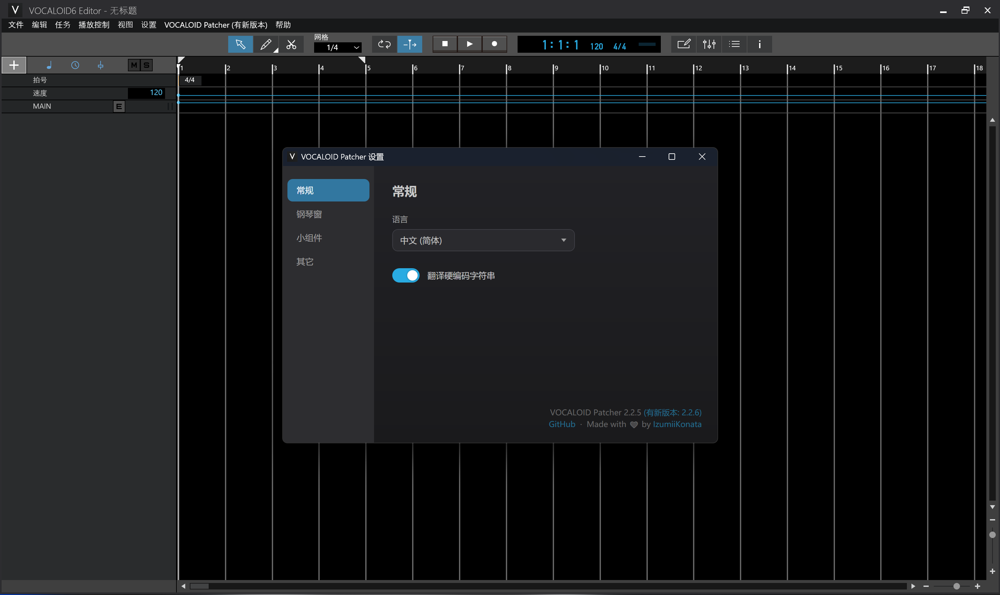
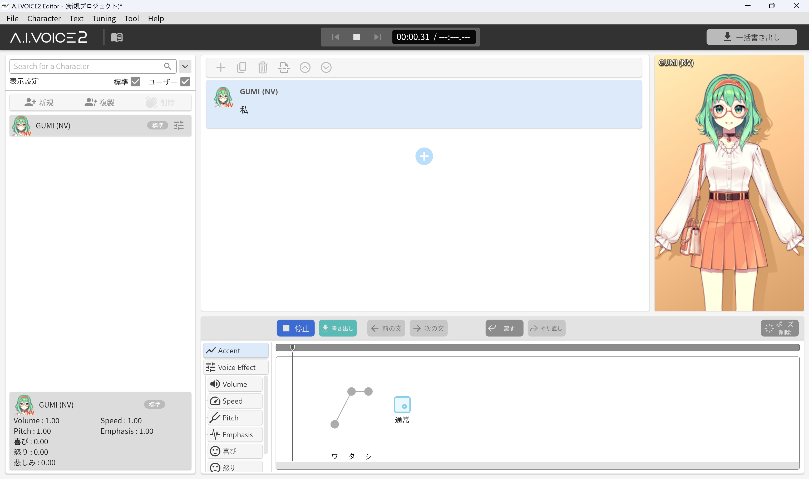
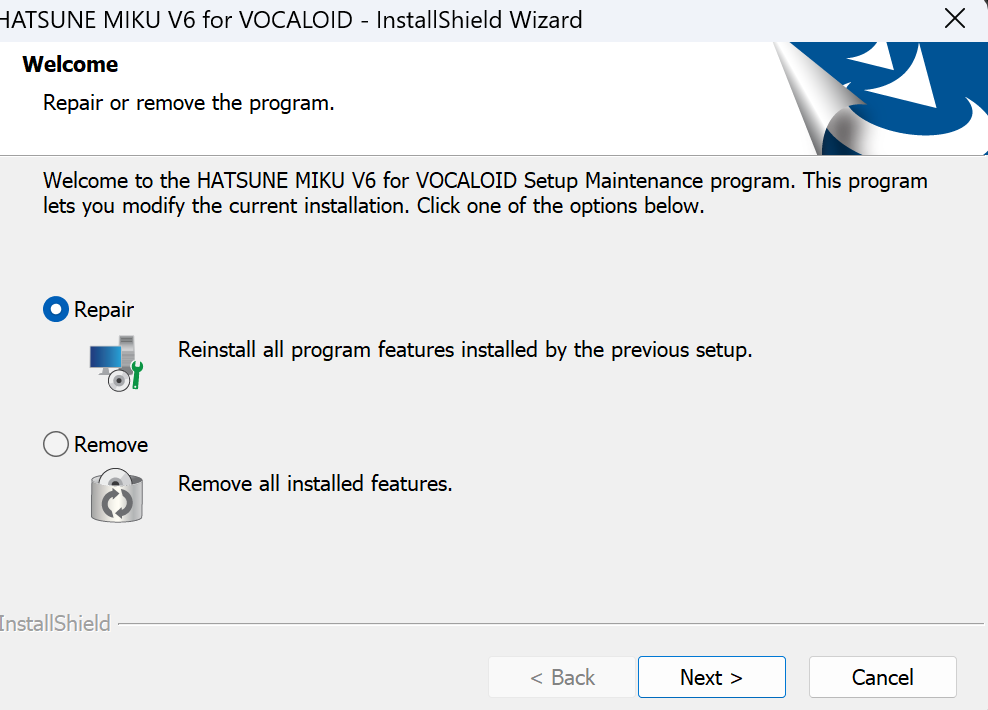
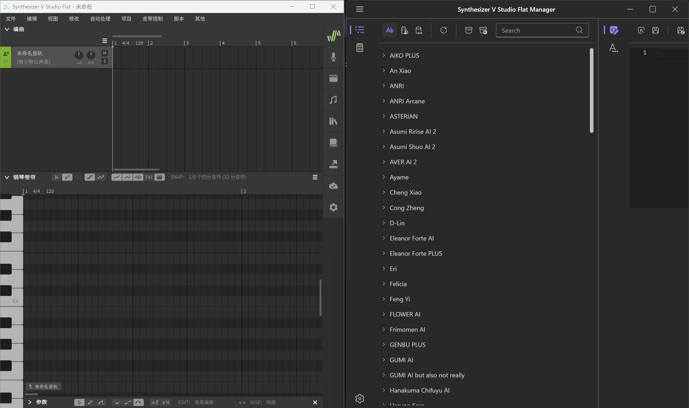
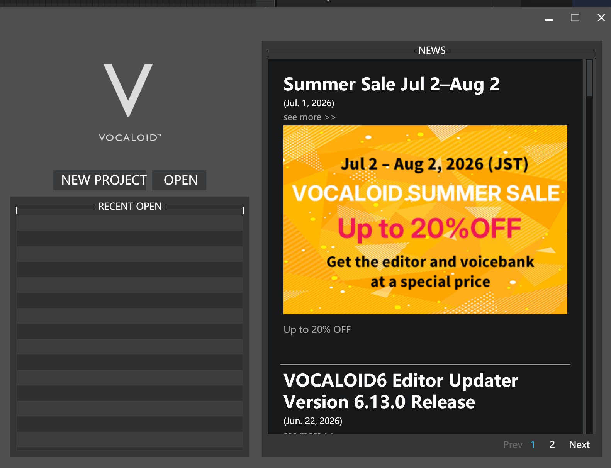
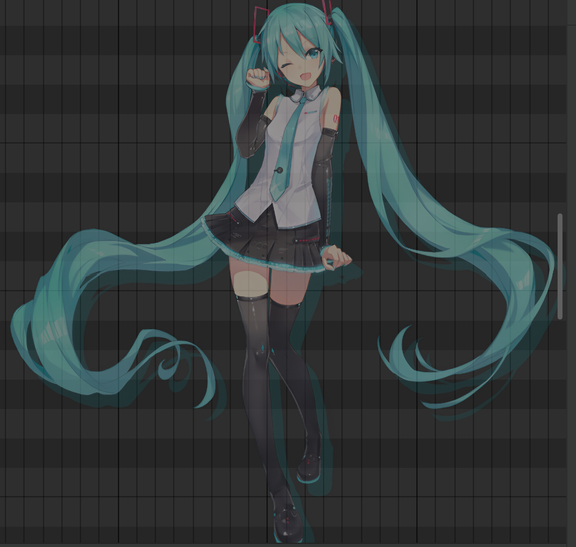
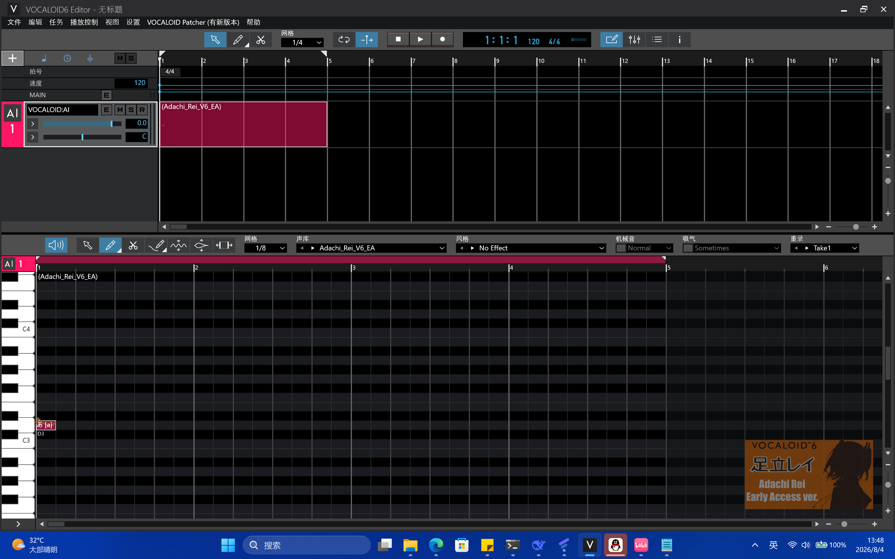

声库下载
声明
本站的此页面内容均为网站vcwiki.kdns.fr分支
如果发现此页面显示异常 请调整至暗色模式
本站的资源仅适合Windows 10 x64及以上系统，标题带-的可以在Windows7及以上运行
本文档的资源仅供学习使用，制作的歌曲不可以上传到网上（除了标题带*的！），失效了请找我反馈，侵权了也可以联系我删除，如果想要提供资源也可以联系我，没有您想要的资源也可以联系我，我尽量找，目前VoiSona、Synthesizer V Studio 2 Pro（SV R3）没有破解，带#的可以免费用，带!的是没破解的，部分链接来自其他网站。
请通过liudongliang201499@outlook.com或QQ 2105446647还有B站账号definelife_ldl（UID：1933170504）联系我
本站的直链下载有一些用户下载较慢，可能是Cloudflare原因，推荐使用Motrix Next进行下载
点击从小飞机云盘下载Motrix Next，无提取码* VOCALOIDPatcher（汉化和更改页面）
用法：替换VOCALOID安装目录下的同名文件，没有破解功能
功能：为 VOCALOID 6 编辑器提供更多功能的补丁
图片展示：

A.I.Voice （2.6~2.10可破解）
用法：替换aivoice安装目录下的同名文件。
文件来自reddit
图片展示：

初音未来V6 EA
用法：直接安装
点击从MediaFire下载此声库的安装程序图片

Synthesizer V Flat & Flat Mananger
用法：直接安装，如果要导入声库请双击sfpk文件，安装包会自动安装管理器和编辑器，解压密码是huakanruSM，来自gimovo.com
点击从百度网盘下载（提取码：qyi5）管理器和编辑器图片

VOCALOID 6.13.0.1
用法：安装VOCALOID 6.13.0.1和VOCALOID 6.13.0.1 Authorization，然后替换编辑器目录下的同名文件
点击从本站下载破解补丁（不是网盘） 点击下载没破解的正版编辑器，官方下载
VOCALOID 6.13.0.1界面

*（需标注非法调音）Kasane Teto V4（重音TetoV4）
用法：解压所有文件后运行Kasane_Teto_V4.exe安装即可，适用于V5及以上编辑器
点击从本站下载重音Teto V4歌爱雪
用法：解压所有文件并运行Yuki_v4.exe
点击从本站下载歌爱雪声库冰山青辉
sv2用法：点击安装即可，这个sv2声库比较特殊，无法在sv2安装，但是可以在sharp和flat安装
v4用法：解压后运行exe即可
初音未来AI2 for Synthesizer V Flat
此声库只支持SV Flat，双击文件安装，比网上流传的一代flat声库更像miku

点击从本站下载Miku v2 Flat声库足立零V6声库
EA声库，测试版，来自Reddit

点击从本站下载足立零V6EA（Early Acess）声库绿色离线版本
下载此页面的绿色离线版本（.exe），无需网络即可浏览下载声库资源。
此程序建议在Windows10x64 版本以上运行
开发者无法保证在Windows10 22h2以下运行
此下载随时可能失效，如发现以上链接均无法下载 请使用此链接下载